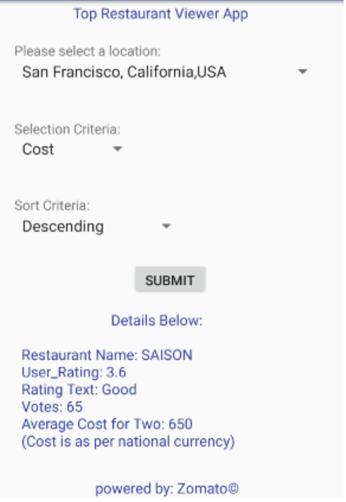

The selection parameters

Cities served by the App

Ascending Order Of Rating

Descending Order Of Rating

Technology boom has exponentially increased the number of online applications. However online marketing has made it harder for the new as well as existing applications to target the right users for capturing the market. While majority illusion can be attributed for the success of latest applications, starting off by targeting influential users has still continued on of the primary marketing strategy. Iterative data processing using Spark is one such methodology that can be used to find influential users in a exponentially increasing social graph of users.
As a part of this project I primarily worked on a 10.4 GB of Twitter Social Graph dataset which contained a twitter user id and the id of the users that they followed. Firstly I used Spark RDD and Spark DataFrames to generate the number of followers of each user and also calculate the number of edges and vertices of the social graph data. Secondly I worked on the implementation of the PageRank algorithm
In addition to the android application, I also created a basic data analytics page which can be used to view most searched cities, most preferred sort parameters and would also maintain a log of all requests and response. The webpage is currently deployed into Heroku. You can view it here.